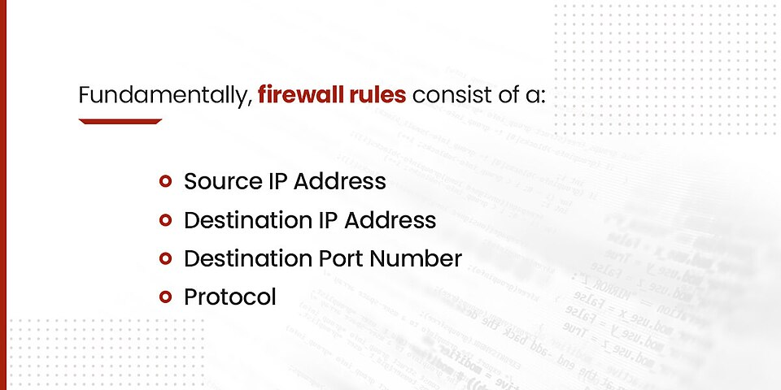

Cortafuegos
El cortafuegos filtra el tráfico entre redes según reglas, protegiendo los recursos internos del exterior.

1. Tipos
- De red (perímetro): appliance o software en el router (p.ej. pfSense, firewall de operador).
- De host: firewall del pro

pio SO (ufw, Windows Defender Firewall). - De aplicación (WAF): protege servicios web.
2. Reglas y zonas
Se definen reglaspermit/DENY por origen/destino/puerto. La DMZ aísla servicios públicos del resto de la red interna.
3. Ejemplo UFW (Linux)
sudo ufw allow 22 (SSH), sudo ufw allow 80,443 (web), sudo ufw enable.
graph TD EXT[Internet] --> FW[Cortafuegos] FW -->|allow 80/443| DMZ[Servidor web] FW -->|deny| INT[Red interna] FW -->|allow SSH admin| ADMIN[Admin]
mindmap
root((Firewall))
Perímetro
Host
DMZ
Reglas
Ejemplo resuelto en clase
Caso práctico: Configurar un cortafuegos.
- Abre el firewall y crea una regla que permita el puerto 443 (HTTPS) entrante.
- Bloquea por defecto el resto (política deny).
- En Linux:
ufw allow 443/tcp. - Verifica que la web es accesible pero los puertos cerrados no.
graph TD EXT[Externo] --> FW[Cortafuegos] FW -->|443 allow| WEB[Web] FW -->|deny| OTR[Otros]
Ejercicio para resolver (que propone el profesor al alumno): El alumno crea una regla de firewall que permite 443 y bloquea el resto.
Ampliación de contenido
Para entender lo anterior (puentes conceptuales)
- El cortafuegos es "el portero del edificio". Mira cada paquete que entra/sale y decide si pasa según la lista de reglas. Sin portero, cualquiera entra.
- Regla = "una instrucción del portero". "Deja pasar al puerto 443, bloquea el 3389". Se leen en orden; la primera que encaja decide.
- DMZ = "la sala de visitas acristalada". El servidor público (web) se pone donde los clientes entran, pero aislado del resto de la casa.
Para profundizar en los contenidos actuales
Tipos de firewall. De red (perímetro, en el router o appliance como pfSense) filtra todo el edificio; de host (ufw, Windows Defender) protege una máquina; WAF protege la app web concreta.
Reglas permit/deny. Se definen por origen, destino y puerto; suelen aplicarse en orden y la primera coincidente gana. Una regla mal ordenada abre o cierra lo que no debiera.
DMZ. Zona desmilitarizada donde vive el servidor público; si lo comprometen, el atacante no tiene acceso directo a la red interna. Aísla el riesgo.
UFW (Linux). sudo ufw allow 22 abre SSH, allow 80,443 la web; enable activa. Por defecto suele denegar lo no permitido (política restrictiva).
Estado de la conexión. Los firewall estado-conexión recuerdan quién empezó; el retorno de una petición tuya entra, pero una entrada "fría" no. Eso distingue respuesta de ataque.
Revisión didáctica
- "No entra la web" suele ser regla que bloquea el 443. Antes de tocar el servidor, mira el firewall; un puerto no abierto deja el servicio invisible desde fuera.
- Orden de reglas importa. Una "allow" general antes que una "deny" específica deja pasar lo que querías bloquear. La primera coincidente gana.
- DMZ no es "poner el servidor en la red interna". Es una zona aparte; meter el servidor público dentro de la LAN expone todo si lo hackean. El aislamiento es la clave.
- Firewall de host no sustituye al de red. ufw protege esa máquina, pero el perímetro sigue necesitando el suyo. Son capas, no una sola.
- "Lo permití pero no va" puede ser el firewall del otro lado. El tráfico cruza varios; el de destino también puede bloquear. Revisar ambos extremos.
Hilo de aprendizaje sugerido: (1) firewall = portero → (2) tipos (red/host/WAF) → (3) reglas (orden, primera gana) → (4) DMZ (aislar público) → (5) UFW y estado de conexión → (6) errores (orden, DMZ dentro de LAN, ambos extremos).
Enlaces relacionados
Recursos externos
Vídeos y artículos recomendados: